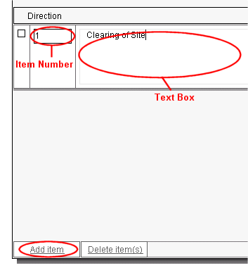

Editing a Clerk of Works Direction |
To add individual Items to the Clerk of Works Direction, click on the Add item button - the user can now enter a number/letter in the small text box and add some details in the bigger one.

The Form Distribution list may also need editing, which can be accessed by clicking on the Distribution List tab. The user can select/deselect team members for inclusion on the form Transmittal Sheet by clicking on the checkbox in the send column. For more information on how to edit this, see Form Distribution List.
Each form in the active job has an associated Form Distribution list. Each of these are populated from the Global Distribution lists. For more information on this, see Global Distribution List. Please Note: Changes made in the Global Distribution lists will be reflected in the Form Distribution lists of any subsequently added forms.
One or more Items can be deleted at once by ticking the check boxes then clicking on the Delete item(s) button. Please Note: Items cannot be removed from the form if the form has been issued.
See also:
Editing a Form
Issuing a Form
Recalling forms
Spell Checker
Contract Administrator Guidance (helpful
advice and information about contract administration and communication)